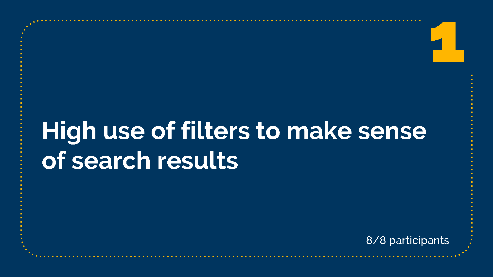
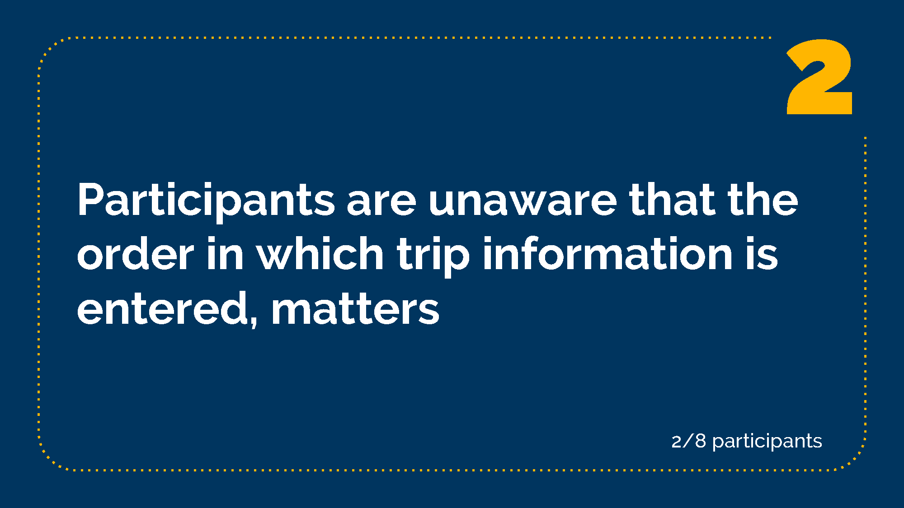
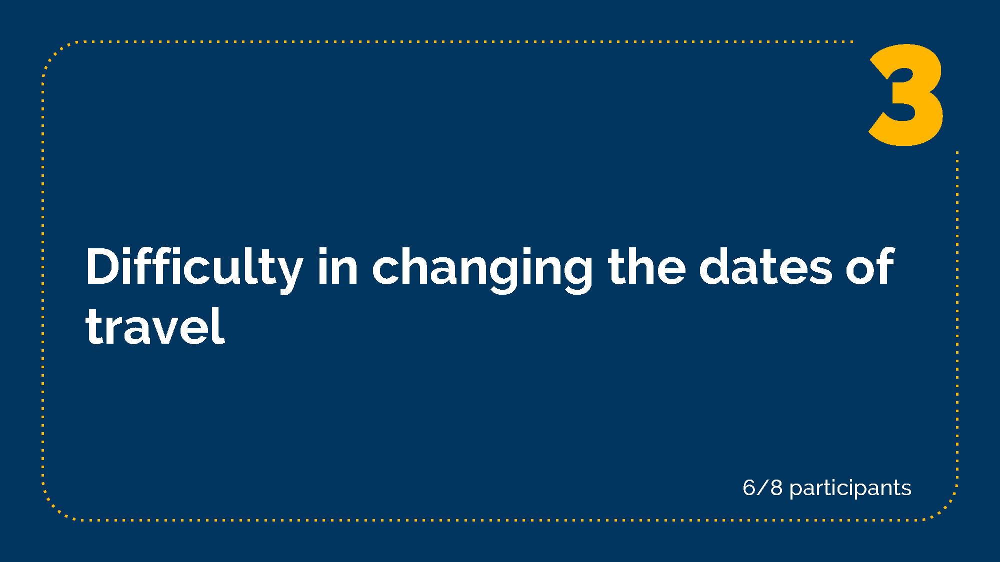
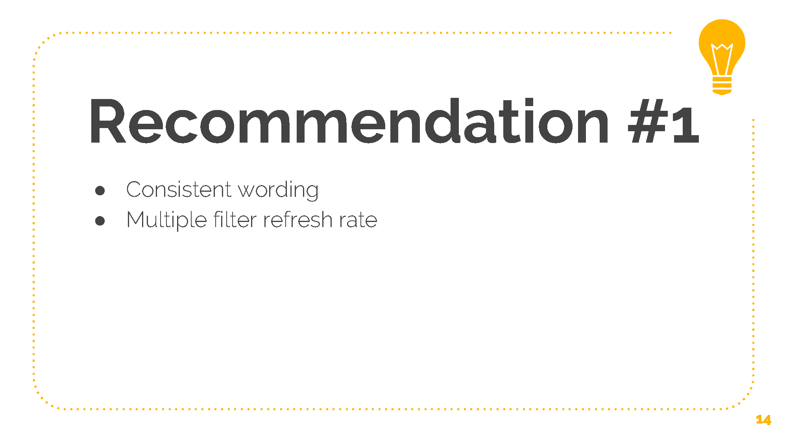
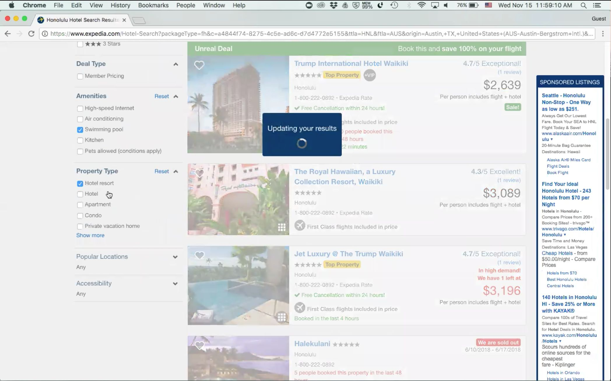
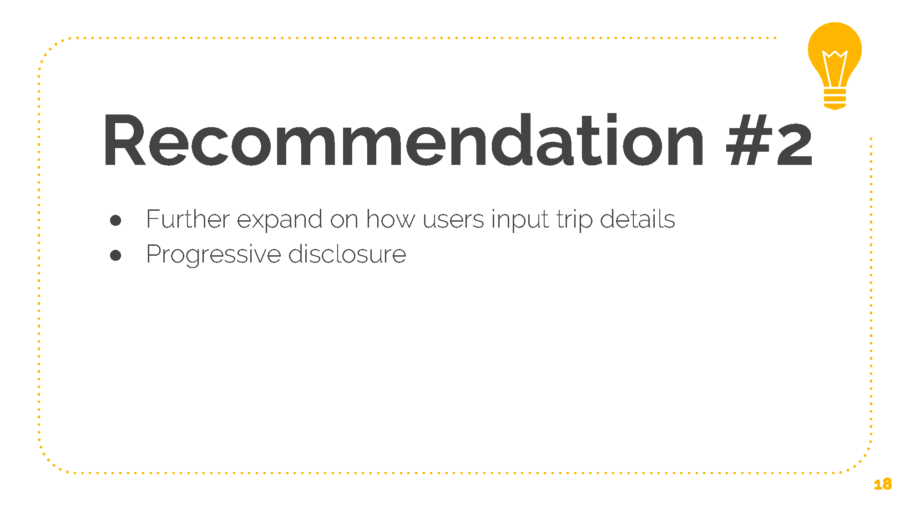
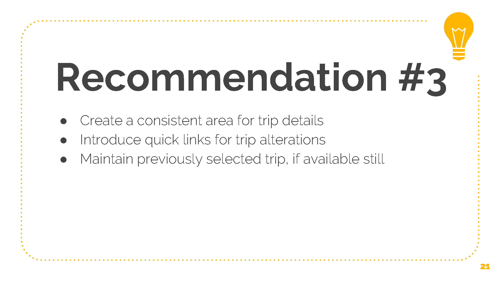

Expedia is an online price aggregator used for booking airline tickets, hotel reservations, rent cars, cruises, experiences, and bundle deals. My team decided to focus on testing the usability of Expedia's bundle deals feature. Our process began by conducting cognitive walkthroughs and heuristic evaluations to determine areas of concern. Next, we conducted 8 usability sessions with new Expedia users to further answer our research questions. With that information, we synthesized the data creating a mock report and a short presentation on our findings. You can read the full report here.
These questions helped guided our work:
Discoverability Will new users be able to navigate through Expedia to find the information they are looking for?
Satisfaction How satisfied are new Expedia users with the end to end process of booking a bundle deal?
Error Correction How efficiently can users correct mistakes in the process of booking a bundle package?
There are four types of users we could see using Expedia: Users who have never booked online at all, users who have booked online but are new to Expedia, experienced Expedia power users, and users who use Expedia just for browsing. Given the ten-week time constraint of the project, we decided to focus on new Expedia users who have traveled at least 3 times in the past year. We chose this audience, because we wanted to understand what new users found challenging and what they liked. This helped us narrow down who we could accept during our screener survey.
We distributed our screener survey in two UW Facebook groups, as well as recruiting participants by email. The tasks we asked participants to complete were as follows: Task 1: Dream Vacation Imagine you live in Austin, Texas and you just won $50,000 from a lottery ticket. You and three of your closest friends have always wanted to go to Honolulu, HI so you decide to book a trip on Expedia. You plan to leave on June 10, 2018 and return on June 17, 2018. Since you are a frequent flyer with Delta Airlines, you would prefer to use their service. You like to sleep in, so you would to prefer to fly in the afternoon or evening. With your newfound wealth choose your dream hotel! Task 2: An educational Getaway with the FamilyImagine you live in Denver, CO with your spouse and two kids (ages 9 and 12). You want to book an educational weekend getaway with the family to Washington D.C. Since the kids are in school, you’ll want to travel during MLK weekend. You plan to leave on January 12, 2018 and return on January 16, 2018. Select the cheapest flights and select a hotel near the United States Capitol Building (within 2 miles) that includes free WiFi and breakfast. Task 3: Error Correction Oh no! You just received an email from the kids’ school, reminding parents that school is back in session on January 15th. Change your flight information, to ensure that the kids are back in school on time.
Here are three quick findings that we observed during the study.
All 8 participants used filters to sort through flight information. Additionally, all participants were able to complete the tasks given within the time constraints.
Using the main search widget proved difficult for some participants. Two participants entered the amount of people before the number of rooms causing an error of accidentally booking for six instead of four people as seen in the video clip below.
Participant had difficult completing task 3, and often restarted the entire booking process. Six of eight participants voiced some confusion or difficulty in changing the dates of their flights. Below is an example of a user working through task 3.
Based on our findings we compiled three design recommendations that could make Expedia a more discoverable, satisfactory, and error free experience. 
One comment many participants noted was how long wait times were and how the filter refresh sometimes lagged how they wanted to search. Furthermore, inconsistent wording was experienced in the filters with the usage of "High Speed Internet", when the hotel pages themselves simply stated if they had "Free Wifi" or not. This made some participants uncertain in their decision-making process. Making the filters wording match the hotel language used could alleviate this problem easily.
 When the participant inputs four people, then two rooms, the interface changes where the information is displayed and adds two people automatically. Participants missed this functionality and we would recommend simplifying the process with progressive disclosure, cleaning up the interface and letting customers enter information in a set order.
The last recommendation is to give passengers a clearer location of their current trip details throughout the process. While there are links to change trip details, they don't always appear on every page and participants normally had to look for it.
This was my first time designing and coordinating a large usability study and I couldn't have done it without my awesome team. If we were to redo this study, we would change a few aspects. Firstly, we would encourage more participant flexibility in trip planning as some participants felt restricted by the scenarios we put them in. Most participants did not have children so they could not empathize with task two as strongly as we would have hoped. Furthermore, our third task had some leading and biased language in it. Expedia explicitly has a button called Change Flights and participants would click on it to try to change their flight return times, but we are not sure if it is because of the language used in our task. I had a lot of fun planning and analyzing the data from this study. The most challenging part was the logistics of scheduling participants and rooms.
Back to Previous Page Back to Home